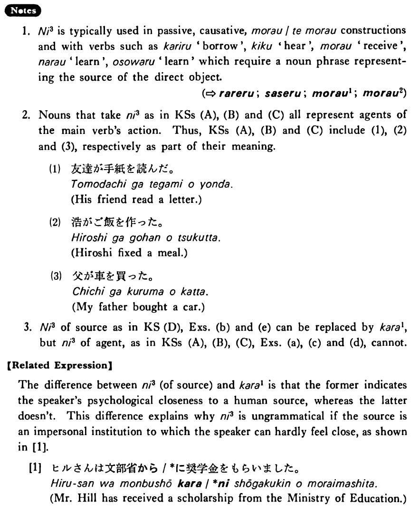

に (3) (B. 292)
- (ksa).
- 一男は友達に手紙を読まれた・読まれました。
- Kazuo's friend read Kazuo's letter (and Kazuo was unhappy).
- (ksb).
- 秋子は浩にご飯を作らせた・作らせました。
- Akiko made Hiroshi fix a meal.
- (ksc).
- 私は父に車を買ってもらった・もらいました。
- My father bought me a car.
- (ksd).
- ジェーンは山野先生に生け花を習った・習いました。
- Jane took lessons in flower arranging from Mrs. Yamano.
- (a).
- その子はお母さんに叱られました。
- The child was scolded by its mother.
- (b).
- A:そのネクタイは誰にもらったんですか。 B:父にもらいました。
- A: From whom did you receive that tie? B: I received it from my father.
- (c).
- 僕はアメリカ人に英語を教えてもらった。
- I had an American teach me English.
- (d).
- 兄は私に五時間も運転させました。
- My older brother made me drive for as long as five hours.
- (e).
- A:吉田さんが結婚したそうですよ。 B:そうですか。誰に聞きましたか。
- A: I heard that Mr. Yoshida got married. B: Is that right? Who told you so?
